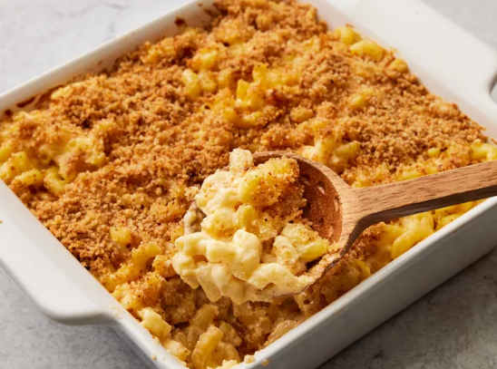

Home
Mac and Cheese!

This homemade mac and cheese is topped with buttered bread crumbs for pure comfort food. It's easy to make the cheese sauce from scratch, starting with a roux and adding milk, Cheddar, and Parmesan to make a rich, decadent sauce that coats every nook and cranny of the noodles.
Ingredients
- Macaroni: This homemade mac and cheese starts with a box of uncooked macaroni noodles.
- Butter and flour: You'll need butter and flour to make a roux for the cheese sauce. You'll also need two tablespoons of butter for the topping.
- Milk: Use whole milk for the richest flavor and texture.
- Cheese:This baked mac and cheese recipe calls for Cheddar and Parmesan cheeses.
- Seasonings:Salt and pepper goes into the sauce, while paprika is sprinkled over the topping.
- Bread crumbs:Use store-bought dried bread crumbs or make your own at home.
Directions
- Boil the noodles, drain, and transfer to a prepared baking dish.
- Make the cheese sauce, pour the sauce over the noodles, and stir.
- Make the topping, spread it over macaroni and cheese, and sprinkle with paprika.
- Bake the mac and cheese until the topping is golden brown.